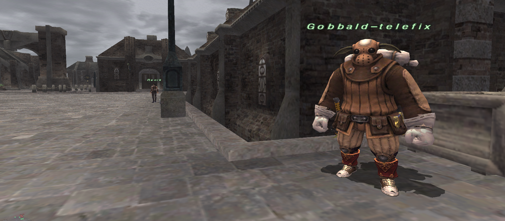

Conquest transportation
Outpost Supply Runs & Warps
Deliver your nation’s supplies during the correct conquest week to permanently register each regional outpost.
Gobbald-telefix · Upper Jeuno
Gobbald-telefix offers outbound outpost travel from Upper Jeuno for a flat 75 gil per journey. Find him at X −3.5176, Y −0.0001, Z 25.3962, beside the stone wall and steps shown below. Renik and the street lamp are visible nearby in this reference photo.

Use his menu
- Speak to Gobbald-telefix. His menu lists the outpost regions currently available to your character, each marked 75g.
- Select the region, then select Travel – 75 gil to confirm. Back returns to the destination list; Leave closes the menu.
- Hold still while he prepares the teleport. Once casting succeeds, 75 gil is deducted and the teleport takes you to that region’s outpost destination.
He uses your existing outpost registrations and level eligibility. A supply run is still needed where the normal outpost system requires one. This service does not register an outpost or bypass an area’s progression requirements. Other national teleport NPCs keep their own fares.
Where he can send you
The following are his configured destinations. His menu only shows those your character is eligible to use; owning access to a region and meeting its required level still matter.
| Region in his menu | Destination area | Fare |
|---|---|---|
| Ronfaure | West Ronfaure | 75 gil |
| Zulkheim | Valkurm Dunes | 75 gil |
| Norvallen | Jugner Forest | 75 gil |
| Gustaberg | North Gustaberg | 75 gil |
| Derfland | Pashhow Marshlands | 75 gil |
| Sarutabaruta | West Sarutabaruta | 75 gil |
| Kolshushu | Buburimu Peninsula | 75 gil |
| Aragoneu | Meriphataud Mountains | 75 gil |
| Fauregandi | Beaucedine Glacier | 75 gil |
| Valdeaunia | Xarcabard | 75 gil |
| Qufim Island | Qufim Island | 75 gil |
| Li'Telor | The Sanctuary of Zi'Tah | 75 gil |
| Kuzotz | Eastern Altepa Desert | 75 gil |
| Vollbow | Cape Teriggan | 75 gil |
| Elshimo Lowlands | Yuhtunga Jungle | 75 gil |
| Elshimo Uplands | Yhoator Jungle | 75 gil |
| Tu'Lia | Ru'Aun Gardens | 75 gil |
| Tavnazia | Lufaise Meadows | 75 gil |
Tu’Lia: this entry is only available if your existing outpost eligibility allows it; Gobbald-telefix does not unlock Sky access.
Li’Telor, Elshimo Lowlands, and Elshimo Uplands are separate destinations: they lead to The Sanctuary of Zi’Tah, Yuhtunga Jungle, and Yhoator Jungle respectively.
Nothing offered? Check your completed supply runs and character level. Teleport canceled? Stand close, remain still during the cast, and keep 75 gil available. No fare is taken for a canceled cast; if the teleport cannot start after payment, the fare is returned.
Looking for the blue Holla, Dem, Mea, Altep, Yhoat, or Vahzl crystal? Those are a separate travel service.
Before accepting
| Allegiance | You must accept supplies from your current nation’s guards. |
|---|---|
| Control | Your nation must control the target region during the current conquest tally. |
| Signet | Obtain Signet while speaking to an appropriate conquest guard. |
| Timing | Regional control can change at the weekly conquest tally; accept and deliver before the next tally. |
Complete a supply run
- Check Region Info and find a region currently controlled by your nation that you have not registered.
- Speak to a conquest guard in your home nation and choose Supplies or the supply-mission option.
- Select the desired region. The guard gives you the region’s supplies as a temporary/key-item objective.
- Travel to that region’s outpost without changing nations or allowing the conquest tally to invalidate the assignment.
- Speak to the outpost guard and deliver the supplies. Finish all dialogue until the guard confirms delivery.
- Return to your home-nation outpost-warp NPC when convenient. The region should now appear in the destination list.
Use an unlocked outpost
- Speak with your nation’s outpost teleport NPC.
- Select a registered region. Availability and gil cost depend on level, allegiance, and conquest conditions.
- Confirm the destination and fee to warp from the city to the regional outpost.
- For the return trip, speak with the regional outpost guard and select the teleport option when available.
Changing allegiance does not erase completed supply-run registrations in modern behavior, but Current Reality-specific travel overrides should be verified in game before documenting a custom exception.
Troubleshooting
Your nation may not control it this week, or you may already be carrying supplies for another region.
Finish the outpost guard dialogue, then reopen the warp NPC menu. Verify you used the correct region’s outpost.
Check minimum level, gil, nation allegiance, and whether the NPC offers inbound or outbound travel.